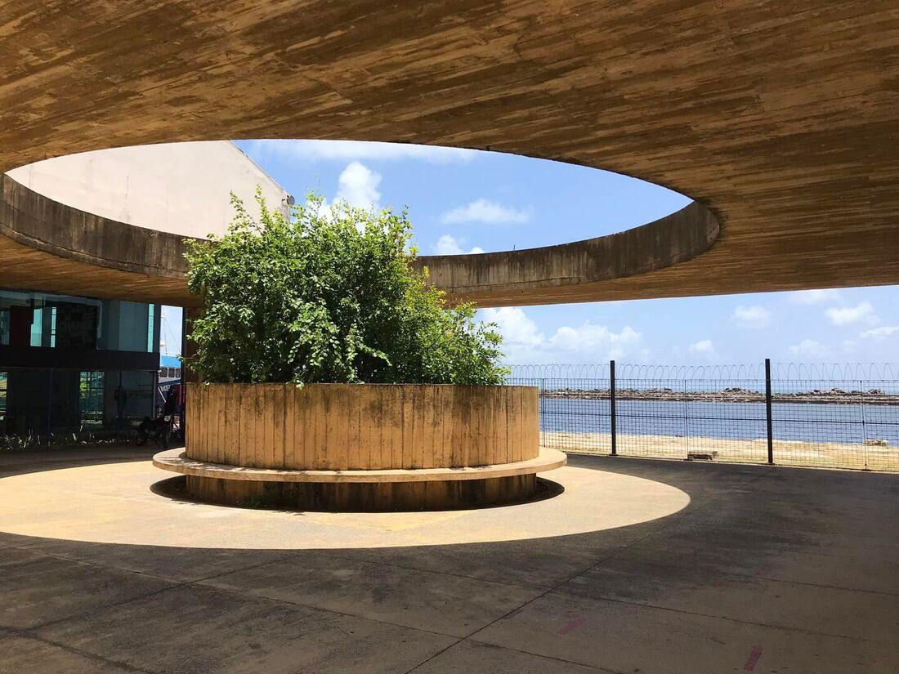

Paço do Frevo
O Paço do Frevo é um espaço dedicado à preservação e celebração do frevo, ritmo icônico de Pernambuco. Ele oferece exposições interativas e oficinas culturais.

O Paço do Frevo é um espaço dedicado à preservação e celebração do frevo, ritmo icônico de Pernambuco. Ele oferece exposições interativas e oficinas culturais.
O Cais do Sertão é um museu moderno que celebra a cultura nordestina e a vida no sertão, com exposições interativas e muita música.
